Tips & Panduan
Baca Selengkapnya →
5 Cara Memilih Kusen UPVC Berkualitas & Tahan Lama
Ketahui beda UPVC asli berbahan heavy-duty dengan yang tipis agar tidak salah pilih.
Evan UPVC melayani pembuatan kusen, pintu, dan jendela UPVC custom untuk rumah minimalis, hunian modern, dan berbagai kebutuhan bangunan. Dengan ukuran yang disesuaikan berdasarkan hasil pengukuran, kami membantu Anda memilih produk UPVC sesuai kebutuhan dan desain bangunan.
Kami melayani konsultasi kebutuhan kusen, pintu, dan jendela UPVC untuk berbagai wilayah di Indonesia. Hubungi Evan UPVC untuk informasi harga, pilihan model, pengiriman, dan pemasangan sesuai lokasi proyek.
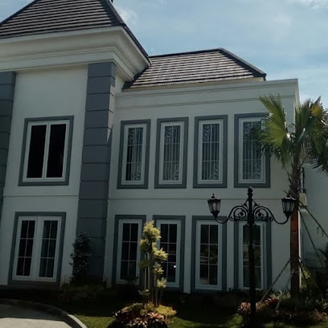
Evan UPVC adalah penyedia jasa pembuatan dan pemasangan kusen, pintu, serta jendela berbahan Unplasticized Polyvinyl Chloride (UPVC) premium yang berpusat di Bekasi dan melayani pelanggan di seluruh indonesia. Kami membantu pelanggan memilih model pintu, jendela, dan kusen UPVC yang sesuai dengan kebutuhan ruang, ukuran bukaan, serta tampilan rumah. Pemilihan profil, kaca, dan aksesori dapat memengaruhi kenyamanan serta hasil akhir pemasangan.
Setiap produk Evan UPVC dirakit menggunakan profil kelas heavy-duty multi-chamber yang dilengkapi tulangan besi galvanis anti-karat di dalamnya. Dipadu dengan sistem karet perapat ganda (double-seal) serta aksesoris penguncian ganda (multi-point locking system), kami memastikan setiap pintu dan jendela yang kami pasang tidak hanya memiliki estetika modern yang presisi, tetapi juga memberikan keamanan dan kekedapan suara tingkat tinggi untuk hunian Anda.
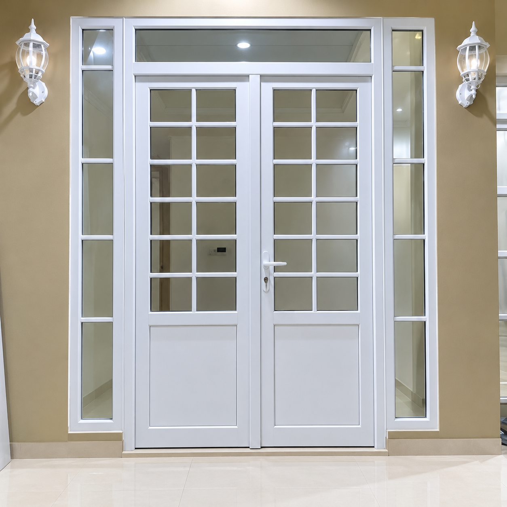
Standar kualitas material kelas heavy-duty untuk kenyamanan dan keamanan jangka panjang
Material UPVC tidak menjadi sumber makanan rayap dan tidak mudah lapuk seperti kayu. Ketahanan akhir tetap bergantung pada mutu material, perakitan, dan pemasangan.
Profil, jenis kaca, dan kerapatan pemasangan dapat membantu mengurangi suara dari luar. Tingkat peredaman bergantung pada spesifikasi produk dan kondisi bangunan.
Ukuran dibuat berdasarkan hasil pengukuran bukaan di lokasi agar produk sesuai dengan kebutuhan ruang.
Dukungan purnajual resmi. Garansi profil 10 tahun dan pemasangan 6 bulan sesuai ketentuan yang disepakati saat pemesanan.
Berbagai variasi pilihan model pintu, jendela, dan sekat ruangan custom bergaya minimalis modern
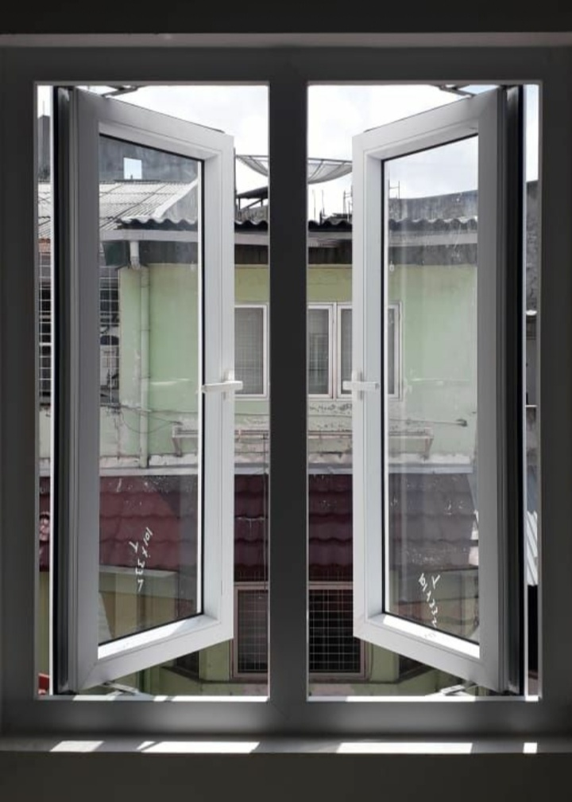
Model buka samping dengan engsel friction stay. Bukaan maksimal, sirkulasi udara optimal.
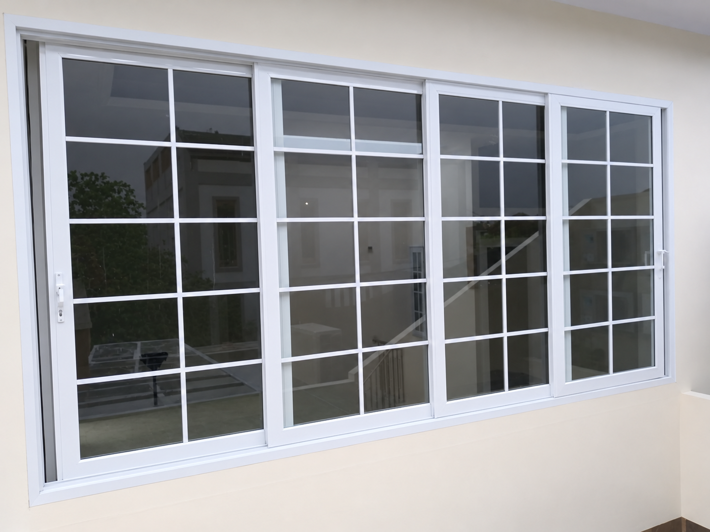
Solusi hemat ruang dengan sistem rel roda yang sangat halus dan kedap saat ditutup.
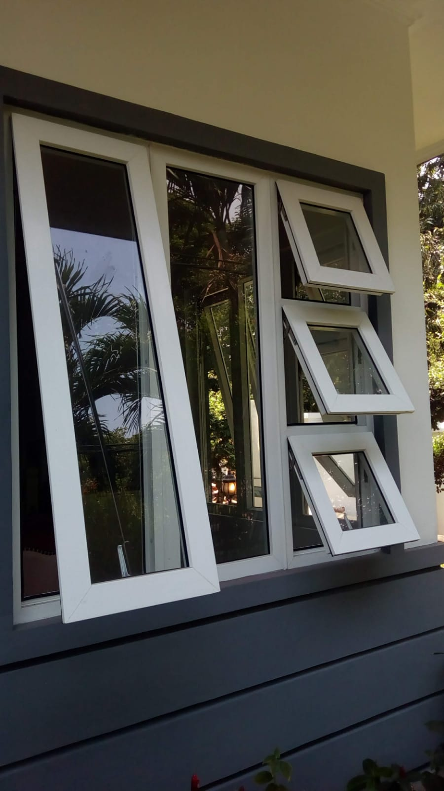
Bukaan luar dari bawah. Aman dibuka saat gerimis ringan tanpa khawatir air masuk.
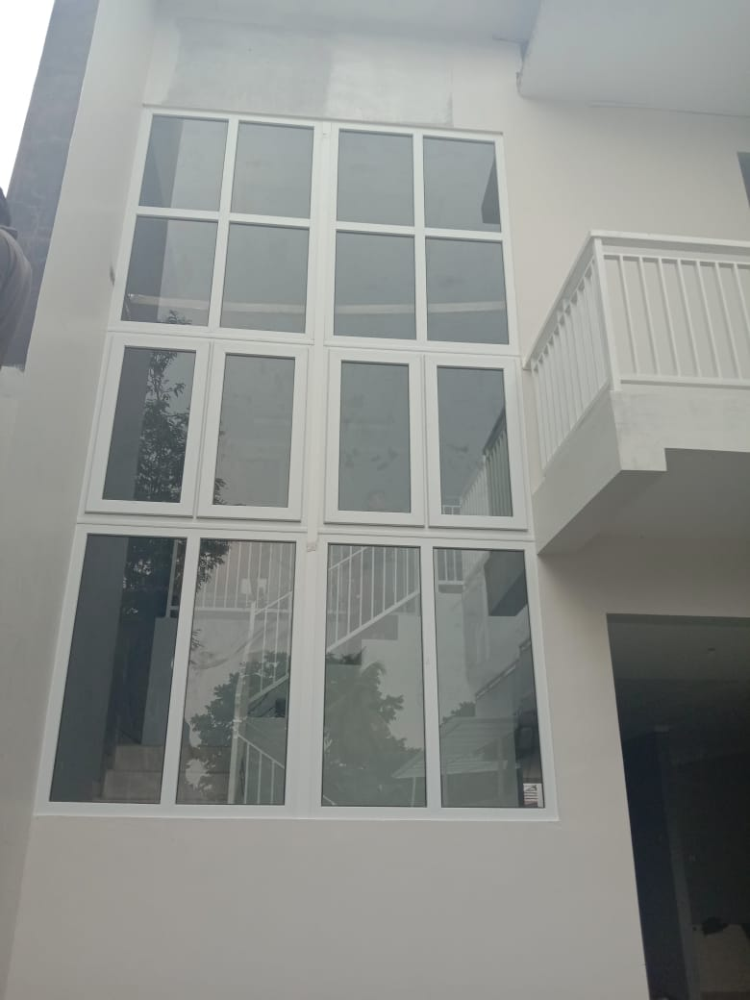
Dirancang untuk pencahayaan alami maksimal tanpa bukaan, cocok untuk void tinggi.
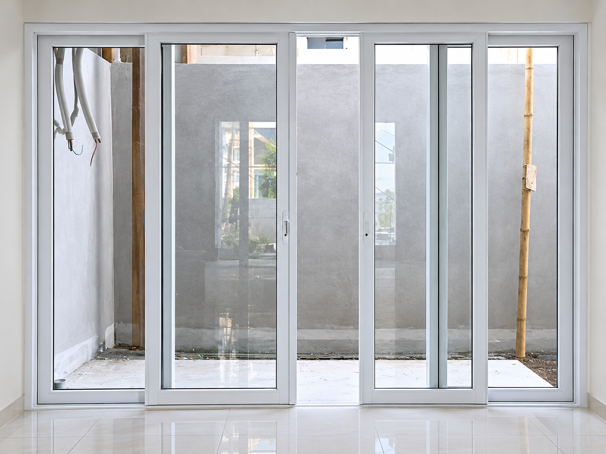
Pintu geser UPVC dengan desain modern dan hemat ruang, cocok untuk akses ke taman, teras, maupun area lainnya.
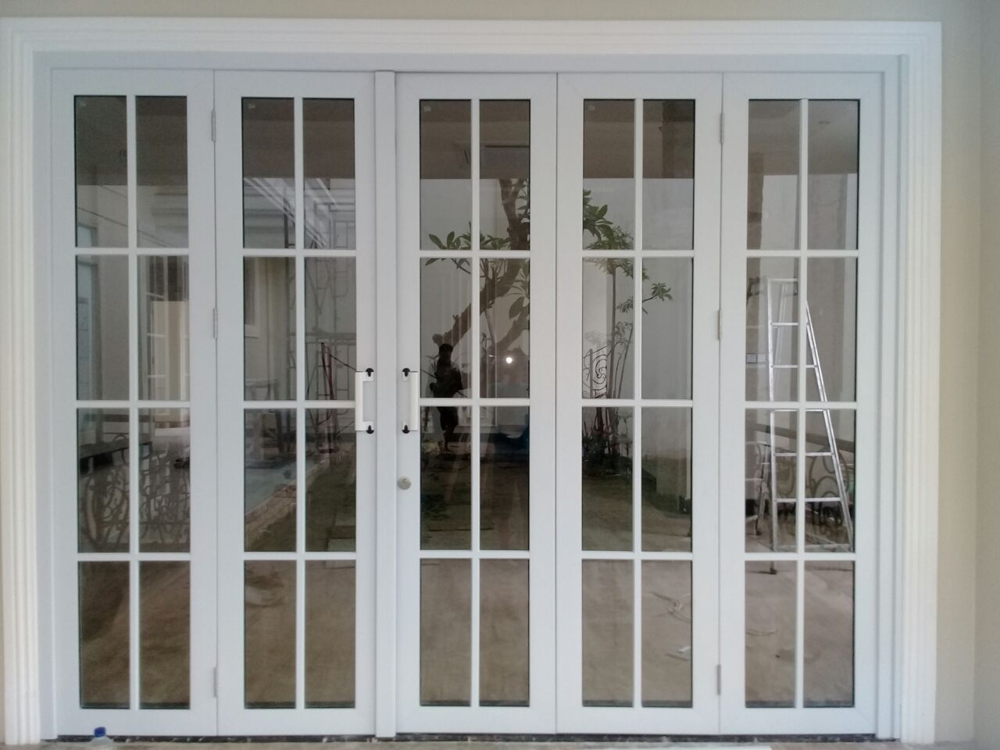
Memberikan bukaan seratus persen luas dan megah untuk pembatas ruangan terbuka.
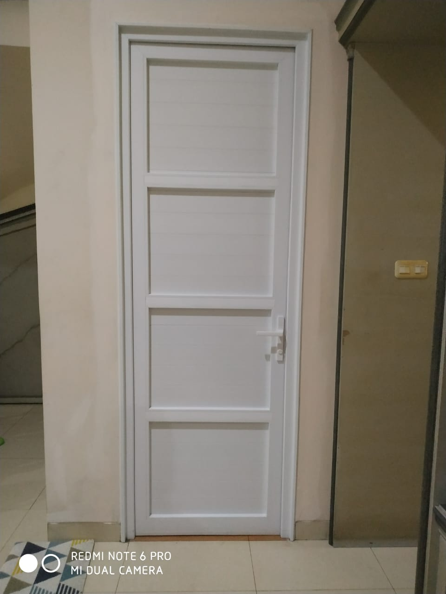
Dilengkapi multi-point lock. Kokoh, anti jebol, dan tahan terik panas matahari langsung.
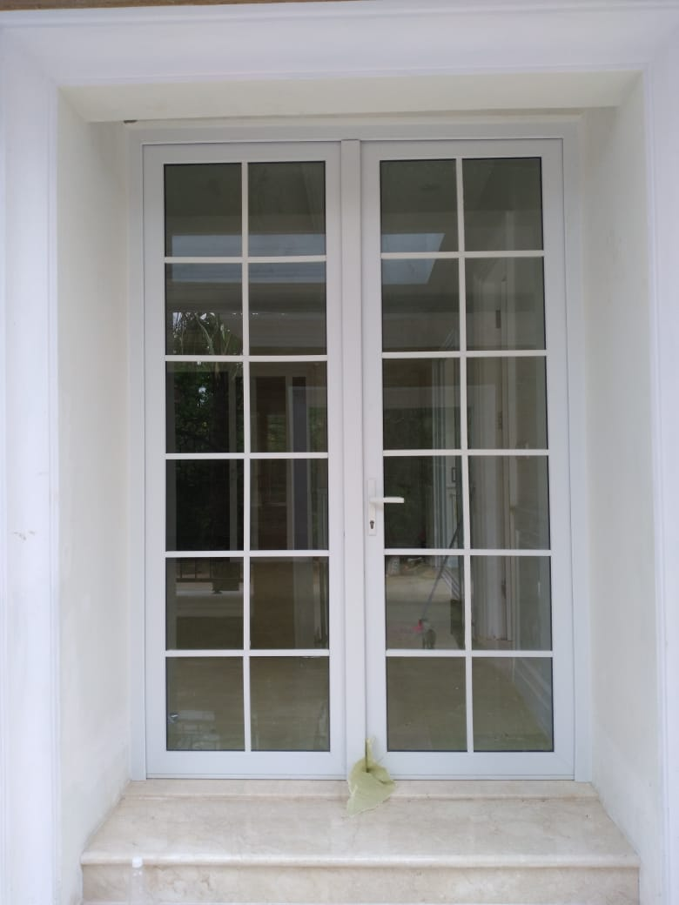
Pintu bukaan ayun berbahan UPVC dengan kombinasi kaca yang memberikan kesan modern dan elegan. Membantu menghadirkan pencahayaan alami serta cocok untuk berbagai desain hunian dan bangunan.
Referensi model kusen, pintu, dan jendela UPVC. Ganti foto referensi dengan dokumentasi proyek asli untuk menampilkan hasil pemasangan Evan UPVC.
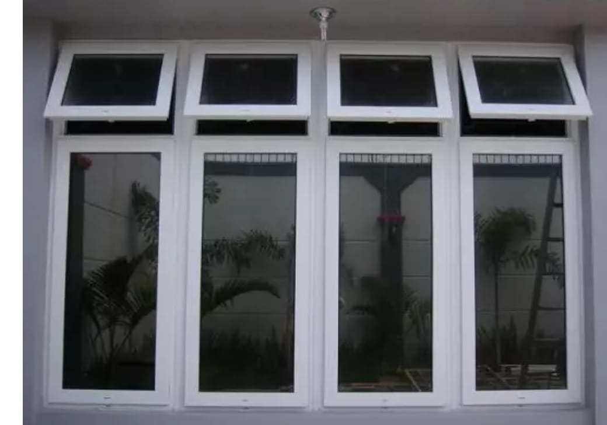
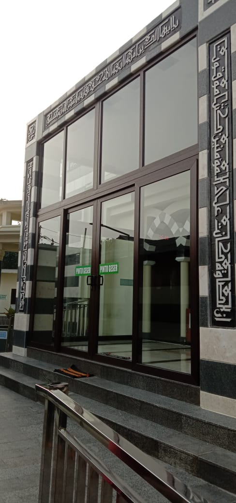
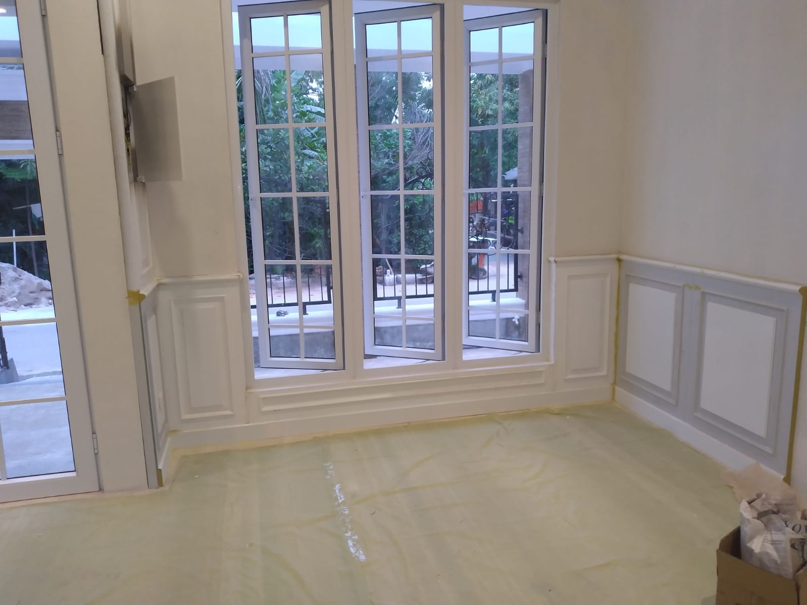
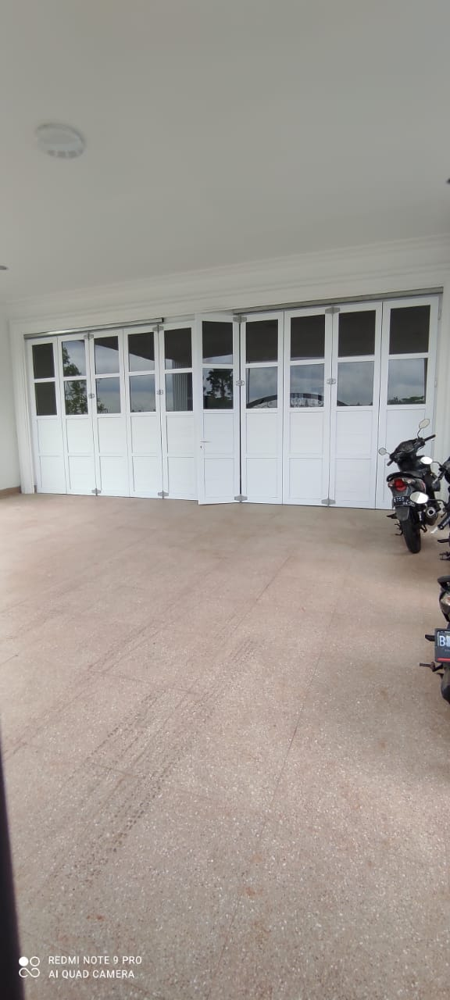
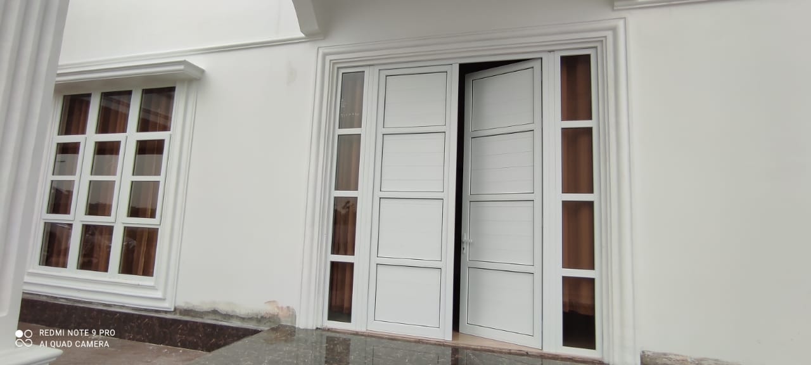
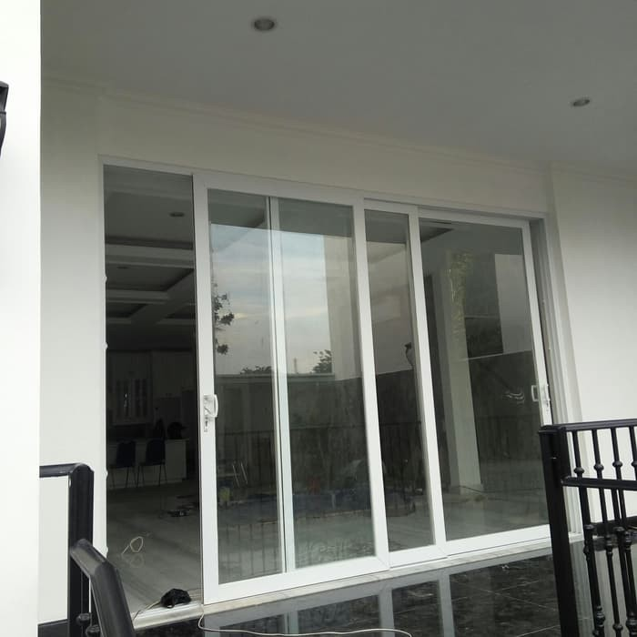
Proses transparan tanpa biaya tersembunyi dari awal sampai terpasang rapi
Kirimkan perkiraan ukuran atau foto area via WhatsApp untuk hitungan estimasi biaya awal.
Tim teknis kami datang langsung mengukur ulang presisi sebelum bahan dipotong di workshop.
Unit dirakit presisi sesuai spesifikasi profil, warna, dan jenis kaca yang disepakati.
Pemasangan di lokasi hingga rapi, pembersihan sealant, dan pengujian fungsi fungsi.
Informasi seputar pemilihan, perawatan, dan keunggulan UPVC untuk hunian Anda
Ketahui beda UPVC asli berbahan heavy-duty dengan yang tipis agar tidak salah pilih.
Perbandingan mendalam tingkat peredaman suara, ketahanan bocor hujan, dan estetika.
Panduan dasar menghitung per meter lari/persegi agar anggaran renovasi tetap aman.
Mengapa UPVC menjadi investasi terbaik pengganti kayu yang sering lapuk dan dimakan rayap.
Pahami perbedaan fungsi dan tingkat kekedapan antara model bukaan geser dan swing.
Informasi lengkap seputar kualitas, keunggulan, harga, dan layanan pemasangan kusen UPVC
Harga kusen, pintu, dan jendela UPVC di Evan UPVC bervariasi tergantung pada ukuran, model bukaan (sliding, casement, folding), serta jenis kaca yang digunakan. Kami memberikan layanan survei dan estimasi hitungan biaya gratis via WhatsApp.
Ya, benar. Kusen UPVC sangat efektif meredam bising karena menggunakan profil multi-chamber yang tebal serta sistem karet perapat ganda (double-seal) yang menutup rapat celah udara dan suara dari luar ruangan.
Sangat tahan. Material UPVC heavy-duty bebas total dari serangan rayap, tidak mudah lapuk karena kelembapan air, serta dilengkapi perlindungan anti-UV sehingga tahan terhadap terik matahari dan hujan deras di iklim tropis.
Rata-rata proses pengerjaan custom mulai dari survei lokasi, pemotongan presisi di workshop, hingga pemasangan memakan waktu sekitar 7–14 hari kerja tergantung volume pesanan.
Workshop utama kami berlokasi di Jl. Dewi Sartika Jl. Salak No.49, Margahayu, Kec. Bekasi Tim., Kota Bekasi. Kami melayani survei lokasi dan konsultasi gratis untuk wilayah Jabodetabek.
Klik pada peta di bawah ini untuk langsung membuka rute di Google Maps Anda